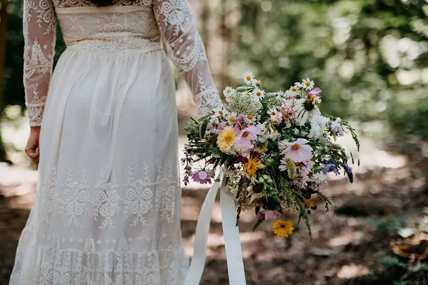

Svatební focení
Fotím celý svatební den od příprav přes obřad až po večerní tanec. Ještě před svatbou se spolu potkáme, abyste věděli, kdo s vámi ten den bude.

Jmenuji se Tomáš Křivánek a jsem svatební fotograf z Prahy. Fotím svatby od ranních příprav až po večerní tanec pod světýlky. Chci, abyste se se mnou cítili uvolněně a c…
Rezervovat termínJsem svatební fotograf z Prahy a svatbám se věnuji naplno. Nejvíc mě baví chvíle, které nikdo nenaplánuje: smích při zapínání šatů, objetí s tátou, prskavky v rukou kamarádů nebo první tanec, když už je venku tma.


Než se uvidíme na svatbě, rád se s vámi potkám. Probereme, jak si den představujete, a hlavně se poznáme. Když si sedneme, je pak na fotkách vidět, že jste byli sami sebou.
Na focení nikam nespěchám. Někdy je to cihlová zeď za statkem, jindy les nebo zapadající slunce u stodoly. Pojďme zachytit i váš příběh společně.
Co fotím
Fotím celý svatební den od příprav přes obřad až po večerní tanec. Ještě před svatbou se spolu potkáme, abyste věděli, kdo s vámi ten den bude.
Fotografie jsou ilustrační
Postup
Napište mi e-mail nebo zavolejte a pošlete datum a místo svatby. Ověřím, jestli mám termín volný.
Potkáme se, poznáme se a probereme, jak bude váš den vypadat a na čem vám záleží.
Jsem s vámi od příprav přes obřad a focení ve dvou až po večerní zábavu. Vy si užíváte, já fotím.
Krátce po svatbě vám pošlu malou ochutnávku a potom celou sadu upravených fotek.
Otázky
Svatební focení začíná na 23 000 Kč. Přesnou cenu vám rád připravím podle délky dne a vašich přání.
Jsem z Prahy, ale fotím i jinde. Pošlete mi místo svatby a domluvíme se.
Ano, rád se s vámi před svatbou setkám. Je to nejlepší způsob, jak se poznat a v den svatby se pak cítit uvolněně.
Krátce po svatbě vám pošlu malou ochutnávku, ať se máte na co těšit. Celou sadu fotek dostanete po úpravách.